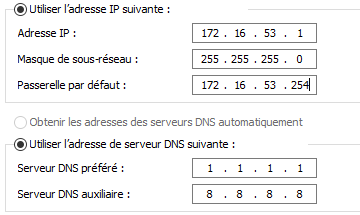
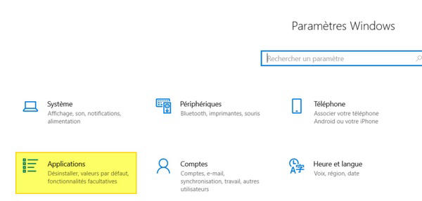
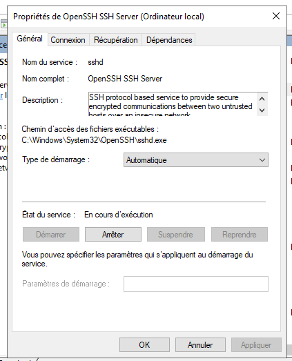
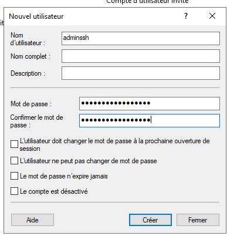
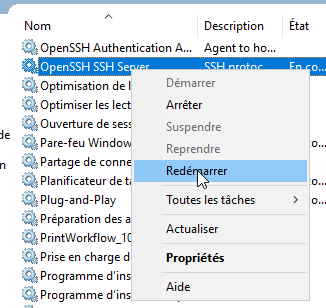
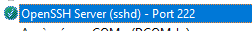

Liaison sécurisée avec le Terminal (SSH)¶
1. Préparation et installation d’OpenSSH Server¶
Configuration réseau¶
Avant l’installation, assurez-vous que le serveur dispose d’une configuration réseau fonctionnelle :

Installation d’OpenSSH Server¶
Installez le rôle OpenSSH Server via le gestionnaire de fonctionnalités Windows :

2. Activation du service OpenSSH Server¶
Activez ensuite le service SSH pour permettre les connexions à distance :

Vérifiez que le service sshd est bien démarré et configuré pour s’exécuter automatiquement.
Astuce
Vous pouvez aussi démarrer le service via PowerShell :
3. Connexion à distance depuis un poste externe¶
Connexion depuis un poste Linux¶
Exécutez la commande suivante dans un terminal :
Entrez ensuite le mot de passe :
Une fois connecté, le terminal affiche :
Microsoft Windows [version 10.0.17763.2114]
(c) 2018 Microsoft Corporation. Tous droits réservés.
administrateur@SERVEURPRIMAIRE C:\Users\Administrateur>
La connexion SSH est opérationnelle.
4. Sécurisation du serveur SSH¶
Création d’un compte dédié aux connexions SSH¶
Pour plus de sécurité, créez un utilisateur spécialement destiné à l’accès SSH :

Exemple de connexion avec ce nouveau compte :
Connexion réussie :
Microsoft Windows [version 10.0.17763.2114]
(c) 2018 Microsoft Corporation. Tous droits réservés.
adminssh@SERVEURPRIMAIRE C:\Users\adminssh>
Bonnes pratiques
- N’utilisez jamais le compte Administrateur pour les connexions SSH.
- Créez un compte dédié et limitez ses permissions.
- Activez la journalisation des connexions pour suivre l’activité SSH.
Désactivation de la connexion avec le compte Administrateur¶
Ouvrez le fichier de configuration SSH :
Commentez ces deux lignes :
# Match Group administrators
# AuthorizedKeysFile __PROGRAMDATA__/ssh/administrators_authorized_keys
Ajoutez ensuite à la fin du fichier :
Redémarrez le service SSH pour appliquer les changements :

La connexion au compte Administrateur est désormais bloquée :
etudiant@S406-P10-L:~$ ssh Administrateur@172.16.53.1
Permission denied (publickey,password,keyboard-interactive).
Modification du port par défaut¶
Pour renforcer la sécurité, changez le port d’écoute SSH.
Ouvrez à nouveau le fichier :
Modifiez la ligne du port :
Ajoutez une règle dans le pare-feu Windows via PowerShell :
New-NetFirewallRule -Name sshd -DisplayName 'OpenSSH Server (sshd) - Port 222' -Enabled True -Direction Inbound -Protocol TCP -Action Allow -LocalPort 222

Redémarrez le service SSH :
Connexion avec le nouveau port¶
Depuis le poste client, connectez-vous en précisant le port modifié :
Connexion réussie :